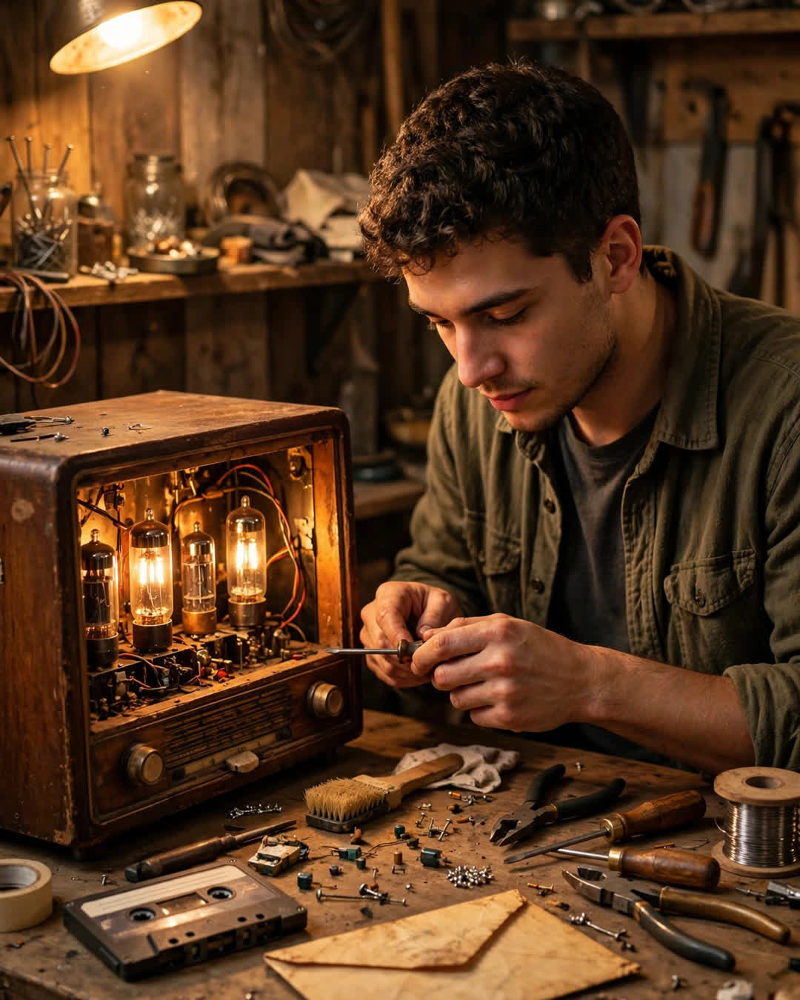

The Radio Hour
A Clipp Kaili original story

Every Sunday at four o'clock, my grandfather turned the kitchen radio on ten minutes early, just to listen to it warm up.
The radio was older than my mother. It lived on his counter in a wooden cabinet scarred from coffee cups, and when those tubes lit up, the whole kitchen smelled faintly warm, like dust on a summer screen door. Grandpa Arthur would pull two chairs close, pour sweet tea, and say the same words every week.
"Quiet now, Caleb. The story's about to find us."
It was an old radio drama hour a little station two counties over still rebroadcast — cowboys, detectives, a woman in 1940s Chicago who solved crimes in heels. I didn't understand half of it when I was eight. I understood all of it by twelve, not because the plots got easier, but because Grandpa explained the pauses. He'd lean in during the quiet parts and whisper what the characters were too proud to say out loud.
That hour taught me more about people than school ever did.
When I left for trade school, the Sundays got fewer. When I got the apartment and the night shifts, they got fewer still. Grandpa never guilted me about it. He'd just say, "Radio keeps the chair warm for you," and I'd laugh and promise next week, the way grandsons do when they think there will always be a next week.
There isn't.
He passed on a Tuesday in February, in his sleep, with that radio still on the counter. At the funeral home, everyone talked about his hands, his laugh, his garden tomatoes. Nobody mentioned Sundays at four. That was ours.
The house went quiet at four.
I took the radio home because no one else wanted a thing that mostly played static. It sat dead on my workbench for two months. Then one rainy Saturday, I opened the back panel with a screwdriver and a stubbornness I got straight from him. A blown tube. A frayed wire. Three parts ordered off the internet from a man in Ohio who still fixes these for love, not money.
While I waited for the parts, I cleaned inside the cabinet — and found the envelope taped behind the speaker, yellowed, in Grandpa's careful block letters:
"FOR THE BOY WHO LISTENS."
Inside was a cassette tape, the kind nobody owns a player for anymore, and a note: "They told me the station might quit running the hour someday. So I made us one of our own. Don't tell your grandmother I borrowed her recorder. — G."
I found a cassette player at a pawn shop for nine dollars.
His voice filled my little kitchen — older, slower, a little shaky, but unmistakably him — reading a story he'd written himself about a cowboy who comes home after twenty years to find his father's porch light still on. He did all the voices. He did the horse sounds with his mouth. Twice, he stopped to cough, apologized to no one, and kept going, because in his story, the cowboy had to make it home before dark.
At the very end, after the last line, there's a long pause. Then Grandpa, forgetting the recorder was still running, says quietly:
"That's a good one, Caleb. That one's for when I'm not in the chair anymore."
Now the radio works. I fixed it on a Sunday, and at exactly four o'clock I turned the dial until the static settled, poured two glasses of sweet tea out of habit, and pressed play on that tape beside it.
The chair next to me was empty.
The hour was not.
This story is a work of fiction, written to touch hearts and bring families closer.
← Back to all stories